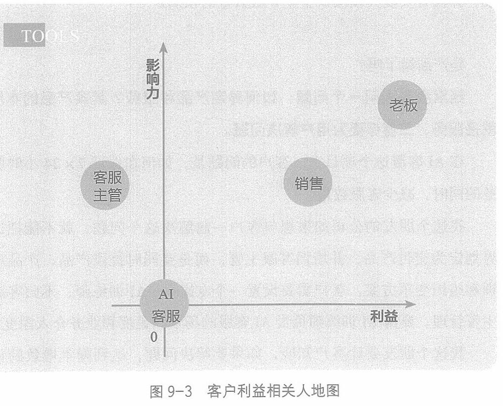

第九章 利益的分歧：利益驱动
我有一个朋友做AI客服产品。
这当然是个老故事。AI客服在电商场景中用得已经非常多。商家在与消费者沟通的时候，常规问题由 AI客服自动应答，特殊问题转人工。这样可以减少企业的客服人员数量，同时可以保证7×24小时常规客服。
但是我这个朋友发现，企业购买他们的产品后，应用深度不够，AI客服的效能没有充分发挥。
如果说 to C(面向用户)企业的要点是“用户体验”，那 toB企业的要点就是“客户成功”。
没有“用户体验烂”却还能风靡的 to C产品。同样，没有“客户不成功”自己还能大获成功的 to B 企业。
怎么办? 我们还是用利益相关人地图(见图9-3)，识别出了该企

249